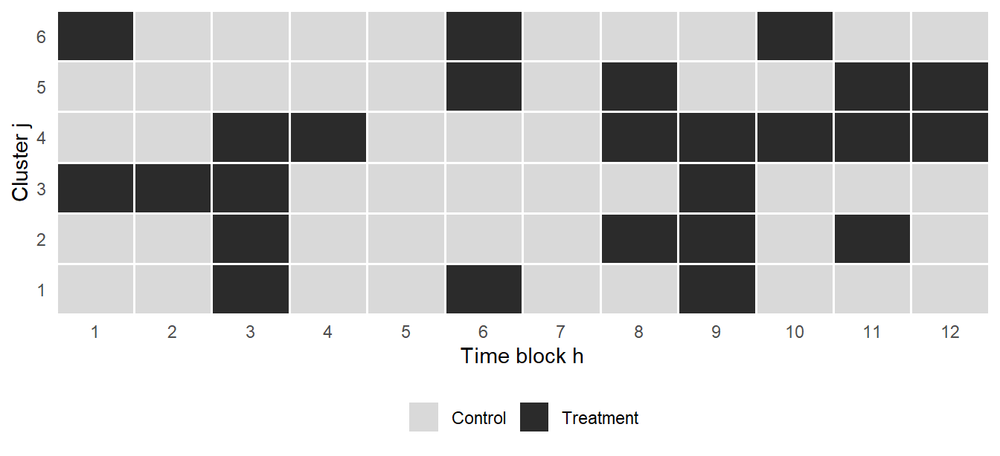
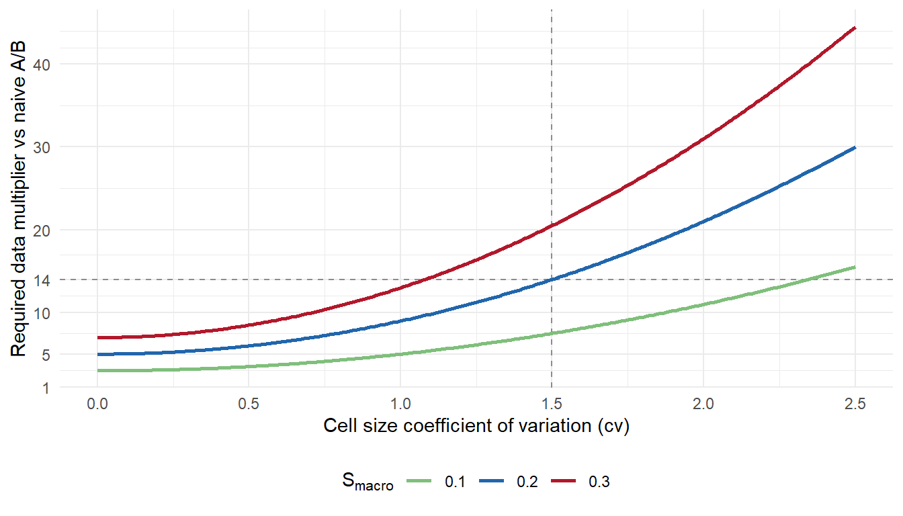
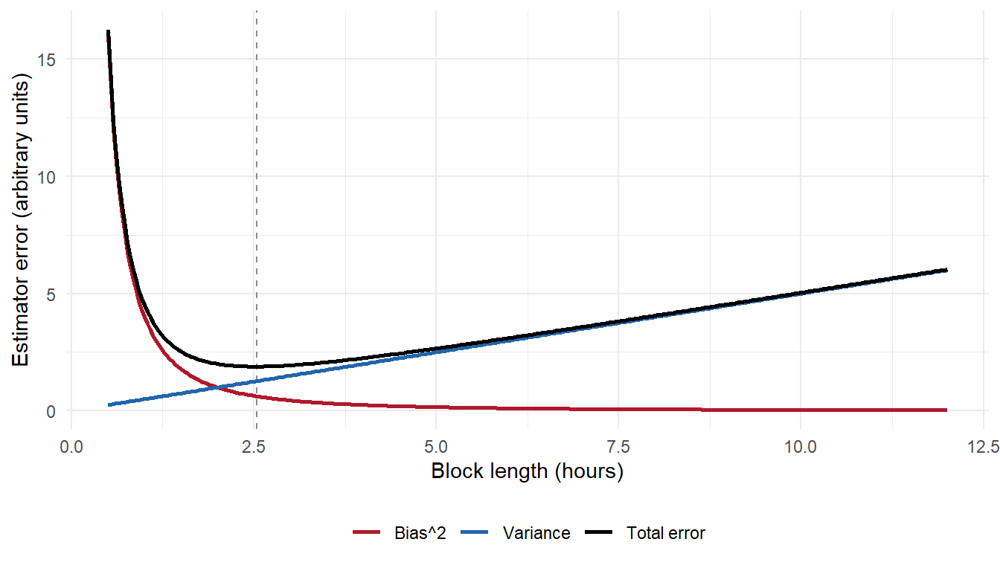

Switchback Experiments: How Marketplaces Test Under Interference
experimentation
causal inference
marketplace
switchback
ABTesting
R
A practitioner’s walkthrough of switchback experiments in marketplace settings: why user-level A/B tests fail, the closed-form variance penalty formalised by Pankratev (2026), how to choose block length, the failure modes that survive good design, and the review checklist for marketplace switchback analyses.
Marketplaces do not run user-level A/B tests to price surge, allocate dispatch, or match riders. They run switchback experiments. Uber, DoorDash, and Lyft all built the design in-house. What is less advertised is the cost. In a typical marketplace configuration a switchback experiment requires roughly fourteen times more data than a naive A/B test to reach the same statistical power. The number is not a rough estimate from practice. Pankratev (2026) derives it in closed form from a multi-level variance decomposition of the individual-level OLS estimator, and shows that the penalty is driven by a Moulton-style factor of \((1 + cv^2)\) acting on macro-level shocks. The full derivation appears in Part III.3.
The obvious question is why a marketplace team would accept a \(14\times\) power penalty. The answer is that the naive A/B alternative is not merely less powerful. It is biased, and the direction of the bias cannot be signed from the data itself. Blake, Nosko, and Tadelis (2015) worked this out at eBay. Standard observational analysis put the return on investment on paid search over brand keywords above \(1{,}400\%\) even with geographic and temporal controls. The randomized experiment they designed returned a causal ROI of \(-63\%\). A full sign flip on the same paid-search question, driven by the fact that the observational estimator could not separate an intercepted click from an incremental one. The choice a marketplace team actually faces is not more power against less power. It is less power against a wrong answer with high confidence.
This post walks through switchback experiments in seven parts. Part I defines the design. Part II shows why user-level A/B breaks in two-sided markets, using the eBay case as the anchor for the underlying mechanisms. Part III formalizes the \(14\times\) variance penalty using the closed-form result in Pankratev (2026). Part IV covers where switchback silently fails, mostly carryover and unmodeled temporal shocks. Part V is the block-length decision. Part VI walks through the design and analysis workflow. Part VII is the review checklist that separates a marketplace switchback analysis worth engaging with from one that is not. R implementation appears once, at the point where it is analytically needed.
Part I. What switchback is, in one page
I.1 The design, formalized in one figure
The setup follows the panel formalization in Bojinov and Shephard (2019), extended to the marketplace panel in Bojinov, Simchi-Levi, and Zhao (2023). The unit of experimentation is a cell. A cell is a cluster crossed with a time period. A cluster is a cross-sectional entity: a delivery zone, a metropolitan market, a matched-user network, or any partition of the platform in which supply and demand clear against each other. A time period is a block of duration typically four to twelve hours. Treatment is assigned at the cell level. Within a cell, every observation receives the same arm. Across cells, treatment is randomized independently, usually with probability one half.
The compact statement is this. With \(J\) clusters observed over \(H\) time blocks we obtain \(J \cdot H\) cells indexed by \((j, h)\). Each cell contains \(n_{j,h}\) individual observations, with mean cell density \(\bar{n}\) and total sample size \(N = J \cdot H \cdot \bar{n}\). Each cell is independently assigned to treatment \(W_{j,h} \in \{0, 1\}\) with probability \(0.5\). The individual-level estimator of the treatment effect regresses the observation-level outcome \(Y_{i,j,h}\) on the cell-level assignment indicator, and the treatment coefficient \(\hat{\tau}\) is the difference in means between on-blocks and off-blocks appropriately weighted by cell size. Standard errors come from a cluster-robust sandwich, or, more carefully, from the closed-form multi-level approximation derived in Pankratev (2026). We reserve the exact variance formula for Part III and use it here only as a design intuition: the estimator depends on how many independent cell-level randomizations we get, not on how many observations we accumulate within a cell.
Two properties separate switchback from naive A/B and both matter for what follows. The randomization unit is the cell, not the individual observation. The same cluster is observed under both arms across time rather than being permanently assigned to one arm. This second property is what makes switchback fundamentally a within-cluster comparison rather than a between-cluster one, which is where its identification power comes from and why cross-sectional heterogeneity across clusters does not enter the estimand.
The trade-off is direct. By crossing space with time, switchback contains the cross-sectional interference that breaks user-level A/B in two-sided markets. The price is that observations inside a cluster share persistent cluster-level shocks that do not average out across cells within that cluster. Those correlated shocks are the source of the variance penalty formalized in Part III.
Under the potential outcomes framework carried over from Bojinov and Shephard (2019), and reviewed at practitioner level in What is a counterfactual?, we write \(Y_t(w_{1:T})\) for the potential outcome at time \(t\) under the full assignment path \(w_{1:T} = (w_1, \dots, w_T)\). Two assumptions replace SUTVA in this environment. First, non-anticipating potential outcomes: \(Y_t\) depends only on past and current assignments, not on future ones. Second, bounded carryover of order \(m\): \(Y_t\) depends on the assignment path only through \((w_{t-m}, \dots, w_t)\), so treatment effects fade after \(m\) periods. Cross-cluster interference at instant \(t\) is assumed absent because within a cluster the whole market is on one arm at any time. Under these assumptions, the target of estimation is the average lag-\(p\) causal effect over the horizon, which with \(p = m\) collapses to the time-averaged contrast
\[ \tau \;=\; \frac{1}{T}\sum_{t=1}^{T}\bigl(Y_t(\mathbf{1}) - Y_t(\mathbf{0})\bigr). \]
In plain English, \(Y_t(\mathbf{1})\) is the outcome the market would produce at time \(t\) if it had been on treatment long enough to be past the carryover window, \(Y_t(\mathbf{0})\) is the analogous quantity under control, and \(\tau\) is the average gap across the \(T\) time periods of the experiment. The estimand is a time-series average, not a per-user average, which matches how marketplace KPIs (gross bookings per hour, delivery time, revenue per request) are actually reported.
I.2 Why “time” is the right dimension for the fix
Interference in a marketplace is a supply-side story. The treated user’s action changes the supply available to control users at the same moment. A rider exposed to surge pricing books more trips and consumes vehicles that would otherwise have served control-arm riders. A driver reallocated by a new dispatch rule pulls capacity away from the control condition on the same block. A restaurant boosted in a control ranking algorithm loses orders to a treatment restaurant sitting one slot above it. The interference is cross-sectional and simultaneous, and it operates through the equilibrium the marketplace is actively clearing. This is why user-level randomization does not solve it: control users are contaminated at exactly the moment treatment users act, because both sides of the platform meet in the same auction, the same dispatch tick, and the same ranking cycle.
Randomizing over time changes the geometry of the problem. During a treatment block every user in the cluster sees treatment and the market clears in one equilibrium. During a control block every user sees control and the market clears in the other. The comparison across blocks is between two clean equilibria rather than between two contaminated arms of the same equilibrium. The operational implication follows. Switchback works when the market’s response to treatment is fast enough to reach a new equilibrium inside a block, and when the block length is materially longer than any carryover horizon between blocks. Ride-hailing surge pricing clears in minutes, and a six-hour block is more than enough. A UI change that requires user learning does not clear inside a block, and a switchback design misfits the intervention. This is why switchback became the default for pricing, matching, and dispatch decisions specifically, and never spread to feature launches or brand experiments where the equilibrium is not what is being tested.
I.3 What switchback is not
Three clarifications are worth stating explicitly, because each one is a mistake that regularly ships in review.
Switchback is not a general replacement for A/B testing. It is a targeted design for interventions that touch the equilibrium of a two-sided market. Creative rotation, notification copy, onboarding flows, and most content-side product changes do not perturb supply, and a user-level A/B remains the correct choice for them. Using switchback where naive A/B is unbiased means paying the variance penalty for nothing.
Switchback is not a way to rescue observational data. The randomization has to be planned prospectively. Post-hoc analysis of naturally alternating exposure sits under a different methodology, closer to interrupted time series or synthetic controls, and does not carry the randomization-based inference guarantees that Bojinov and Shephard (2019) build the switchback framework on. If treatment assignment was not randomized at the cell level ex ante, the estimator you compute is not the estimator we analyze in Part III.
Switchback is not free. The variance penalty is real and formalized in Pankratev (2026). The operational cost of running switching infrastructure, including carryover buffers between blocks, audit of assignment integrity, and monitoring for treatment leakage across cluster boundaries, is nontrivial. Choosing switchback over geo experiments is an active engineering and statistical trade-off, and the decision rule appears in Part V.
NoteWhen to reach for switchback vs geo experiments
The full comparison sits in Part V. The short answer: pick switchback when the market clears fast inside a block and the number of available geographic units is small. Pick a geo experiment when many independent geos exist and the treatment effect is not time-sensitive. Anything in between is a judgement call driven by carryover length, seasonality, and whether the interference concentrates in space or in time.
With the design in hand, the natural question is how bad the alternative actually is. If user-level A/B tests were 90% correct in marketplace settings, we would tolerate the bias, keep the power, and move on. The reason we do not is that the bias is not 10% or 20%. On the cases we have on record, it can multiply the estimated effect by a factor of three, or flip its sign entirely, on the same underlying data and the same treatment. Part II walks through the three mechanisms that produce the flip and the two documented cases that motivate switchback existing at all.
Part II. How user-level A/B tests break in marketplaces
The eBay sign flip in the opening is shocking on the page and unsurprising in the mechanism. It falls out of a violation of SUTVA on a shared substrate. That failure mode splits into three channels once the substrate is named, because the diagnostics and the fixes differ across them. The first is supply-side interference, where the treatment consumes a finite resource that would otherwise have served the control arm. The second is auction-side interference, where the treatment shifts the equilibrium of a matching or bidding mechanism that the control arm still competes in. The third is cross-user contamination through shared content, where the treatment changes what other users are shown and therefore what they do. Kohavi, Tang, and Xu (2020), Chapter 22, catalogue the same three channels under the labels of leakage and interference through direct and indirect connections, and the taxonomy that follows tracks theirs. Readers new to the topic may find the practitioner-level treatments in When A/B tests lie: spillovers in two-sided markets and Your A/B test is probably wrong an easier entry point than the academic references below.
II.1 Supply-side interference
Supply-side interference is the cleanest case to reason about. Consider a ride-hailing surge pricing experiment. The treatment raises the price on a fraction of ride requests. In a user-level A/B split, half the riders see the treatment price and half see the control price, both drawing from the same pool of available drivers on the same road at the same instant. Treated-arm riders under a higher price book fewer trips and release drivers back into the pool. Those drivers become available to control-arm riders, whose observed completion rate rises above what it would have been if the price had held at the control level everywhere. The system is not two isolated marketplaces running in parallel. It is one marketplace with a shared supply pool, split by rider only at the level of the price the app displays.
The observed consequence is that the estimated treatment effect on the control arm is not zero. Some of the treatment’s effect leaks into control through the shared substrate, and the difference between arms understates the true effect of a global rollout. Kohavi, Tang, and Xu (2020), Chapter 22, work through the same mechanism for Uber and Lyft explicitly and cite Chamandy (2016) as the reference case. The clustered switchback breaks the shared substrate by putting every rider inside a cluster on the same price during a block, so treated riders cannot release drivers to control riders at the same instant, because there are no control riders at that instant inside that cluster.
The mechanism generalizes far beyond ride-hailing. Any experiment where the treatment consumes a scarce shared resource has the same structure. Delivery batching consumes courier capacity. Search ad ranking consumes the top slot on a page. Feed ranking consumes user attention. Recommendation training consumes a shared model that both arms retrain against. In every case, when the treatment shifts consumption of the shared resource, the control arm’s counterfactual moves in the same direction as the treatment’s effect, and the user-level estimator understates the treatment effect. The direction of the bias is toward zero, which is the polite failure mode: teams under-ship changes that would have worked. The impolite failure mode is when the estimator crosses zero in the wrong direction, which brings us to the auction case.
II.2 Auction-side interference
Auction-side interference is the mechanism behind the eBay paid-search case. Consider an advertiser-facing policy on a two-sided marketplace where sellers bid for slots against a platform algorithm, or a platform-facing decision on whether to run paid search on its own brand keywords. Under a user-level or geographic-level A/B, some slice of buyers or geographies sees one policy and the rest see the other. Sellers do not observe the treatment split at the level the experiment is randomizing over. They observe the aggregate rate at which their bids or the platform’s ads convert into impressions and revenue, and they adjust accordingly. When the treatment policy affects the aggregate conversion rate, sellers respond by moving their bids and the auction clears at a different equilibrium than either the pure treatment or pure control counterfactual would predict. The user-level estimator captures the difference between two arms operating inside a shared, contaminated equilibrium. It does not capture the difference between the two equilibria that would obtain if the policy were rolled out to everyone or to no one.
The magnitude of the distortion is not bounded by anything intuitive. Blake, Nosko, and Tadelis (2015) work through the canonical case at eBay. Non-experimental estimates of the return on investment on brand-keyword paid search ran at over \(4{,}100\%\) without time and geographic controls, and still above \(1{,}400\%\) with such controls. The randomized experiment they designed, in which paid search on brand keywords was halted across a random subset of eBay’s US traffic, returned a causal ROI of \(-63\%\). Substituting organic traffic for paid ads on brand queries lost the company essentially nothing, meaning the pre-experiment analytics were confusing an intercepted click with an incremental one. The two-sided auction mechanism did not cause the sign flip on its own here; the mechanism was more general, that the same user population produced both the paid and the organic traffic and the observational estimator could not separate the intercepted fraction from the induced one. But the structural point survives. Whenever the mechanism being tested is an equilibrium object, only an experiment that observes the equilibrium under each arm identifies the causal effect. Kohavi, Tang, and Xu (2020) list the shared-budget ad campaign channel and the eBay auction case in the same chapter on interference, and cite Blake and Coey (2014) alongside Blake, Nosko, and Tadelis (2015) as the reference cases for the auction failure mode.
The general lesson matters more than the specific numbers. When the auction is what is being changed, only a design that lets the auction clear cleanly under each arm identifies the causal effect. That means randomizing at a level at which the auction can clear cleanly under one arm at a time. In a switchback that level is time. During a treatment block the whole cluster sees the treatment policy and sellers respond to that policy alone. During a control block the whole cluster sees the control policy and sellers respond to that. The two arms are two equilibria rather than two slices of the same equilibrium. The bias goes away not because the practitioner became more careful, but because the design stopped asking the auction to serve two masters at once.
II.3 Cross-user contamination through content
The third channel is subtler and easier to miss. Even without a scarce resource being consumed and without an auction adjusting, the treatment can leak into control through the content that users see about each other. Reviews, ratings, recommendations of the form “users who liked this also liked that”, social features, activity feeds, and any product surface that aggregates behaviour across users are all vectors for cross-user contamination. When a treatment causes some users to behave differently, the aggregated signal from those users flows into the surface that control users observe, and control-arm behaviour shifts as a consequence.
The diagnostic is that the treatment estimate depends on the exposure share. Run the same user-level experiment at \(1\%\) treatment share, then at \(50\%\), then at \(99\%\). If the estimated treatment effect changes materially across those splits, cross-user contamination through content is present. If the estimate is stable, the leak channel through content is negligible for this treatment. The formalization is the same interference structure as the supply-side case, but the substrate is content rather than physical capacity. The fix is the same as well: randomize at a level that isolates the substrate. If the shared content updates on a cluster-time cadence, put all users of a cluster on the same arm during a block. If the shared content pools across clusters, no cluster-level randomization will fix the leak, and the appropriate design is a geo experiment or a synthetic control cohort rather than a switchback.
The three channels do not exhaust the ways user-level A/B can break, but they cover the marketplace cases that appear in practice. The common thread is that user-level randomization takes for granted that treatment assignment isolates the users under study. In a marketplace, users are not isolated. They meet in supply, in auctions, in shared content, and often in more than one of these at once. Switchback is the design that stops assuming isolation and starts randomizing at the level where the interference actually operates.
Part III. The 14x variance penalty, formalized
Part II established that user-level A/B in a marketplace is biased, and that switching randomization to the \((cluster, time\ block)\) level fixes the bias. The question we take up now is the price we pay for that fix. The price has a name, the switchback variance penalty, and until recently it did not have a closed-form expression. Practitioners estimated it by Monte Carlo, following the simulation-based apparatus that grew out of Bojinov and Shephard (2019) and was extended in Bojinov, Simchi-Levi, and Zhao (2023). Pankratev (2026) closes that gap. He derives an asymptotic approximation to the variance of the individual-level OLS estimator in a switchback and decomposes it into two clean pieces: the naive A/B variance we would have obtained on the same data, and an additive penalty term whose structure is fully transparent.
The plan of this part is short. We state the decomposition (III.1), identify the two sources of the penalty (III.2), walk through the \(14\times\) example that motivated the opening of this post (III.3), and then turn to the levers that actually shrink the penalty in a real marketplace (III.4). By the end you should be able to look at your own platform, plug in four numbers, and estimate the switchback penalty without opening a simulation notebook.
III.1 The variance decomposition
The setup is the one we have been carrying since Part I. We observe \(J\) clusters over \(H\) time periods. Each cell \((j, h)\) contains \(n_{j,h}\) individual observations, with mean cell density \(\bar{n}\) and total sample size \(N = J \cdot H \cdot \bar{n}\). The cell-size coefficient of variation is \(cv = \text{std}(n_{j,h}) / \bar{n}\). Treatment is assigned independently at the cell level with probability \(0.5\). The estimator is the individual-level OLS difference in means, equivalent to a cell-size-weighted comparison of treated and control observations. This is the estimator that appears by default when a practitioner regresses the outcome on the treatment indicator with observation-level data, which is why Pankratev takes it as the object of interest rather than an unweighted cell-level average.
Under the standard multi-level error model, with cluster shocks \(\alpha_j\), time shocks \(\gamma_h\), cluster-time interaction shocks \(\eta_{j,h}\), and idiosyncratic residuals \(\varepsilon_{i,j,h}\), Pankratev (2026) shows that the variance of the estimator admits the following approximation, restated here in its clean two-term form (his equation 3):
\[ \text{Var}(\hat{\tau}) \;\approx\; \underbrace{\frac{4\,\sigma^2_{\text{total}}}{N}}_{\text{naive A/B variance}} \;+\; \underbrace{\frac{4\,\sigma^2_{\text{macro}}}{J \cdot H}\bigl(1 + cv^2\bigr)}_{\text{switchback penalty}} \]
In words, the variance of a switchback estimator equals the variance of a naive A/B test on the same \(N\) observations plus an additive penalty. The penalty is driven by the macro-level variance \(\sigma^2_{\text{macro}}\), meaning the variance contributed by shocks that are shared across observations inside a cell: cluster effects, time effects, and the cluster-by-time interaction. Writing \(S_{\text{res}}\) for the residual variance share and \(S_{\text{macro}} = S_{\text{cl}} + S_{\text{time}} + S_{\text{int}}\) for the sum of the cluster, time, and interaction shares, we have \(S_{\text{res}} + S_{\text{macro}} = 1\). The penalty is amplified by the factor \(1 + cv^2\), where \(cv\) measures how far the marketplace is from having identically sized cells.
The value of having this in closed form is not aesthetic, it is operational. Before Pankratev (2026), a team wanting to power a switchback in a new market had to simulate the design under plausible assumptions about cluster effects, time effects, and interactions, sweep over \(J\) and \(H\), and read off the minimum detectable effect from the tails of the simulated distribution. That work is expensive, hard to audit, and hard to reason about at the design stage. The decomposition in the display equation collapses the same calculation into four scalars, \(\bar{n}\), \(cv\), \(S_{\text{macro}}\), and \(S_{\text{res}}\), and it makes the trade-offs visible on the back of an envelope. Every reference to the variance formula in the rest of this post reaches back to this decomposition without restating it.
III.2 Where the penalty comes from
The penalty has exactly two sources, and separating them clarifies why techniques that look useful in an A/B setting behave very differently under switchback randomization.
The first source is macro-level shocks. In a naive A/B test with independent assignment at the observation level, every observation is its own draw of the treatment indicator. A shock that hits a whole cluster, or a whole time block, is spread across both arms in expectation, because the assignments inside that cluster are independent of one another. The shock cancels. In a switchback, all \(n_{j,h}\) observations inside a cell inherit the same treatment status by construction. If cell \((j, h)\) is assigned to treatment and the cluster is having an unusually strong day, the shock \(\alpha_j\) enters the estimator scaled by the number of observations in that cell rather than averaged over independent assignments. The shock does not cancel across arms inside the cell. It contributes to the estimator’s error at cell scale, and cell scale is what the \(4\,\sigma^2_{\text{macro}} / (J \cdot H)\) term encodes.
The second source is cluster size imbalance. If every cell contained exactly the same \(\bar{n}\) observations, the penalty on macro shocks would still be present, but the multiplier \(1 + cv^2\) would collapse to \(1\). Cell sizes are almost never equal in a marketplace. Some zones are dense, others are sparse. Weekday evenings are heavy, weekend mornings are light. When cell sizes vary and treatment is randomized at the cell level, a given draw of the assignment can place a disproportionately large cell in one arm. That arm then receives excess weight on the macro shock of that particular cell. The more spread there is in cell sizes, the more damage a single unlucky draw can do, and the size of that damage scales with \(cv^2\). This is a direct generalization of the classical Moulton factor from clustered data analysis, extended by Pankratev to the multi-level error structure of a switchback.
The operational implication is that the penalty is not a fixed cost stamped on the design. It scales with the share of variance that comes from macro shocks and with the imbalance of the cells, and both are quantities the practitioner has some ability to influence before the experiment starts.
III.3 The 14x worked example
We now walk through the example that motivated the opening of the post. The four inputs come from a typical dense marketplace configuration, and they are the same numbers Pankratev (2026) uses in Section 3.2 of his paper. Mean cell density \(\bar{n} = 20\) observations, meaning that a cell of size roughly twenty is what a delivery or ride-hailing platform sees in a moderately busy zone-hour. Cell-size coefficient of variation \(cv = 1.5\), which is typical for platforms where some zones are dense city cores and others are peripheral. Residual variance share \(S_{\text{res}} = 0.80\), meaning that most of the raw variation in the outcome is individual-level noise. Macro variance share \(S_{\text{macro}} = 0.20\), the remainder, coming from cluster, temporal, and interaction shocks combined.
Factoring the common \(4\sigma^2_{\text{total}} / (J \cdot H)\) multiplier out of the decomposition, the naive A/B contribution is proportional to \(1 / \bar{n} = 1 / 20 = 0.05\). The switchback penalty is proportional to \(S_{\text{macro}} \cdot (1 + cv^2) = 0.20 \cdot (1 + 1.5^2) = 0.20 \cdot 3.25 = 0.65\). The total switchback variance is proportional to \(0.05 + 0.65 = 0.70\). The ratio to the naive A/B variance is \(0.70 / 0.05 = 14\). Switchback in this marketplace requires exactly fourteen times more data than a naive A/B to reach the same statistical power. That is the \(14\times\) we promised in the opening.
The intuition is worth stating slowly. Macro shocks contribute only twenty percent of the raw variance. If nothing else were happening, that twenty percent would be a manageable overhead. What makes the penalty large is the cluster imbalance multiplier, which turns \(0.20\) into \(0.20 \cdot 3.25 = 0.65\). And here is the sharpness of the result: the residual contribution shrinks as we push more observations into existing cells, because \(1/\bar{n}\) falls with \(\bar{n}\). The macro contribution does not. It is anchored at \(S_{\text{macro}} \cdot (1 + cv^2)\) regardless of how many rows the analyst adds per cell. Densifying does not save us. To raise power we need more independent randomizations, meaning more clusters \(J\), more time periods \(H\), or a lower \(cv\).

TipThe 14x number in one line
\[\text{data multiplier} \;=\; \frac{\tfrac{1}{\bar{n}} + S_{\text{macro}} (1 + cv^2)}{\tfrac{1}{\bar{n}}} \;=\; \frac{0.05 + 0.65}{0.05} \;=\; 14.\] Every switchback power calculation the analyst signs off on should carry these four numbers explicitly.
III.4 What actually reduces the penalty
Three levers move the penalty, and they are not equally attractive.
The first is to increase \(J \cdot H\), the count of independent randomizations. This is the only lever that reduces variance uniformly, on both the naive A/B term and the penalty term, and it is the lever the practitioner has the most direct control over. Add clusters by partitioning the geography more finely, add time periods by running the experiment longer or shortening the block length, or do both. The returns to \(J \cdot H\) dominate the returns to \(\bar{n}\) once macro shocks are present, which is the design lesson of Pankratev (2026).
The second is to reduce \(cv\). Balancing cells is an operational design choice made before randomization begins. In a delivery platform this can mean merging low-volume zones into larger units or splitting high-volume zones into smaller ones so that the resulting cells sit within a tighter size distribution. Pankratev is careful on this point. Cluster balancing does not eliminate the penalty, because the interaction variance component cannot be neutralized by any static assignment rule, and that limit is worth stating plainly. What balancing does is drive \((1 + cv^2)\) toward \(1\), which in the \(14\times\) example alone would cut the penalty from \(0.65\) to \(0.20\) and pull the required-data multiplier from fourteen down to five.
The third lever is variance reduction, and this is where most practitioners get the wrong answer. CUPED (Deng, Xu, Kohavi, and Walker, 2013) and CUPAC-style boosted-tree adjustments (Poyarkov et al., 2016) both work by absorbing pre-experiment predictable variation from the outcome. In an A/B setting, targeting individual-level residuals is the obvious move, because residual noise dominates the error of the estimator. In a switchback, residual noise is already suppressed by the \(1/\bar{n}\) factor, and it is macro noise, amplified by \((1 + cv^2)\), that dominates the error. The correct target inverts. Pankratev (2026), Section 5.2, makes this concrete for the same \(\bar{n} = 20\), \(cv = 1.5\) marketplace: halving \(S_{\text{macro}}\) reduces variance by \(0.5 \cdot 0.20 \cdot 3.25 = 0.325\), while halving \(S_{\text{res}}\) reduces variance by \(0.5 \cdot 0.80 \cdot 0.05 = 0.02\). Adjusting for macro noise is \(16.25\) times more effective, despite the raw macro share being four times smaller. The practical takeaway is straightforward. If a CUPAC pipeline was tuned for A/B, it needs to be retuned before it is used inside a switchback. The covariates and the predictive model should be engineered to explain cluster-level and time-level shocks first, and only spend model capacity on individual-level residuals after the macro component is exhausted.
A closely related lever, which Pankratev works through in Section 5.3, is the choice between the individual-level and cell-level estimators. Both are unbiased. The individual-level version carries the \((1 + cv^2)\) penalty. The cell-level version escapes it by weighting every cell equally, but pays a Jensen penalty scaling with \(E[1/n_{j,h}]\) instead. There is a threshold \(cv^*\), derived in his Appendix F, at which the two variances cross. In the same \(\bar{n} = 20\), \(cv = 1.5\) configuration the threshold sits at \(cv^* \approx 0.67\), well below the observed imbalance, so the cell-level estimator is strictly preferable on that platform. His numerical example puts the cell-level variance at roughly \(0.33\) against the individual-level \(0.70\), more than halving the variance without any additional data collection. This is not a universal recommendation. It is a check the analyst should run explicitly before locking in the estimator, because in an imbalanced marketplace the choice moves the effective sample size by a factor that dominates every other design decision.
The variance penalty is now quantified and the levers are named. What Part IV takes up are the failure modes that no amount of variance reduction can repair: temporal carryover across blocks, time-varying confounders that correlate with the block boundaries, and learning effects that build inside the experiment window. The decomposition in III.1 is derived under the assumption that the design is executed correctly. Part IV covers what happens when it is not.
Part IV. Where switchback silently fails
Part III showed that the variance penalty is quantifiable, decomposable, and manageable. A well-designed switchback with balanced clusters, large \(J \cdot H\), and macro-variance-targeted covariate adjustment yields a defensible estimator. It does not yield an unbiased one. Three failure modes survive good design, each documented in the Bojinov, Simchi-Levi, and Zhao (2023) treatment, and each common enough to warrant a diagnostic check before a marketplace switchback result is signed off. The three, in order: temporal carryover, time-varying confounders, and treatment learning effects.
IV.1 Temporal carryover
Switchback assumes two things about block transitions. First, that within a block, the market reaches a new equilibrium under the treated condition. Second, that when the next block begins, the market resets before the new equilibrium is measured. Both assumptions fail routinely in marketplace settings. In ride-hailing surge pricing, drivers who left the platform during a high-price block do not return the moment the price drops back. In dispatch, delivery batches created under one algorithm are still being served after the algorithm switches back to control. The effect of the treatment persists into the adjacent block and contaminates the counterfactual. Bojinov, Simchi-Levi, and Zhao (2023) formalize this as temporal interference, and it is the switchback analogue of the SUTVA violation that switchback exists to fix.
You diagnose carryover by comparing the metric in the first hour of a control block to the same metric in the last hour of that block. If the market has cleanly reset, the two distributions should be indistinguishable up to sampling noise. If they differ systematically, and if the sign of the difference tracks the treatment condition of the preceding block, carryover is present. A more formal test is to re-estimate the treatment effect using only observations at least a candidate carryover horizon into each block, then compare that estimate to the naive switchback estimator that uses all observations. Disagreement beyond sampling noise tells you that the naive estimator is contaminated and that the carryover horizon is at least as long as the window you excluded.
The fix is to make block length large relative to the carryover horizon. Bojinov, Simchi-Levi, and Zhao (2023) provide formulas for optimal block length as a function of the carryover horizon and the target estimand. The rule adopted in practice throughout this post is that block length should be at least twice the estimated carryover horizon, and that horizon should be defended with a pilot rather than assumed from priors. The rule is stated fully in Part V.3 and referenced from there. When operational constraints prevent longer blocks, the analysis window should be restricted to the tail of each block, with the loss of power accepted. The naive estimator should not be reported alongside the tail-restricted one as if they were the same quantity.
IV.2 Time-varying confounders
Switchback randomizes at the cell level, but the underlying data-generating process has strong time-of-day, day-of-week, weather, holiday, and macroeconomic components. Random assignment guarantees these confounders balance in expectation. It does not guarantee they balance in a single realized experiment. Any finite switchback will land some heavy demand days in one arm and some light demand days in the other. When the confounders are large relative to the treatment effect, and in most pricing and dispatch contexts they are, the point estimate shifts substantially depending on which specific blocks landed in which arm. This is not bias in the classical sense, because expectations are correct. It is realized variance that practitioners regularly mistake for a treatment effect.
The diagnostic is straightforward and should be pre-registered. Before running the experiment, list the confounders you expect to matter: day of week, hour of day, weather category, presence of major events, macro indicators if the experiment runs long enough for them to move. After the experiment, regress the outcome on treatment and on these confounders, and compare the treatment coefficient to the unadjusted difference in means. If the coefficient changes materially under adjustment, the confounders were driving part of the naive estimate. The red flag that deserves the most weight is sign flipping. If the treatment effect estimate flips sign across defensible specifications that differ only in which confounders enter, the experiment does not have enough independent randomizations to identify the effect, and no analytical choice will rescue it.
Two operational fixes are worth using together. The first is stratified randomization, where assignment is balanced within known strata, for example, forcing an equal number of Fridays in each arm and an equal number of rainy days if weather is a known driver. The second is post-hoc covariate adjustment, which is the CUPED (Deng, Xu, Kohavi, and Walker, 2013) logic applied at the macro level rather than at the individual-user level. As Part III noted, macro-covariate adjustment is where variance reduction has the highest leverage in switchback, because the source of variance is temporal rather than cross-sectional. The rule is: stratify what can be stratified in advance, and adjust for the rest in the analysis stage. Adjustment alone should never substitute for stratification when stratification was available.
IV.3 Treatment learning effects
Some treatments produce effects that emerge gradually. A new dispatch algorithm may show a small effect in the first hour of a block and a much larger effect in the third hour, as couriers adjust routing behaviour to the new incentives. A new pricing algorithm may look neutral on the first day and beneficial by the third, as consumers update their reference prices and the platform’s demand model retrains on the new distribution. If the block length is shorter than the learning horizon, the switchback estimator captures the transient regime rather than the steady state. The result is a measurement error that is directional. The estimated effect is closer to zero than the true steady-state effect, systematically so.
You diagnose learning effects by plotting the estimated treatment effect as a function of time-into-block, pooling across blocks of the same condition. If the effect is roughly flat across the block, the steady state was reached quickly and the estimate is trustworthy. If the effect grows monotonically over the block, learning is present and the block length is undersized. Extrapolating the trend to its asymptote gives a rough sense of how much of the steady-state effect the current design is capturing. If the plot has not levelled off by the end of the block, you have no defensible upper bound on the gap between the switchback estimate and the true steady-state effect.
The fix, when feasible, is longer blocks. When longer blocks are ruled out by operational constraints or by carryover on the other side, accept that the switchback estimator is a lower bound on the steady-state effect and communicate it that way. For treatments whose learning horizon dominates any feasible block length, switchback is the wrong design. Geo experiments, with horizons measured in weeks rather than hours, are the appropriate substitute.
WarningLearning effects bias the estimator toward zero
When the treatment’s learning horizon exceeds the block length, the switchback estimator systematically understates the steady-state treatment effect. The bias is directional and toward zero, which means a null or marginal switchback result on a slow-learning treatment does not license a null decision. Report the estimate as a lower bound to stakeholders and flag the learning-horizon assumption explicitly, rather than presenting the naive number as if it measured the long-run effect.
Three failure modes, three diagnostics, three fixes. The common thread is block length. Temporal carryover is resolved by blocks longer than the carryover horizon, learning effects are resolved by blocks longer than the learning horizon, and time-varying confounders are handled by stratification and adjustment but benefit indirectly from the larger number of randomization units that a well-chosen block length permits. Block length is the primary tuning parameter of switchback design, and Part V treats it as such: how to choose it before the experiment, how to defend the choice with a pilot, and how to reason about the trade-off between the variance penalty formalized by Pankratev (2026) and the bias penalties formalized by Bojinov, Simchi-Levi, and Zhao (2023).
Part V. Choosing block length
Block length is to a switchback what sample size is to an A/B test: the primary knob traded against everything else. Longer blocks reduce carryover contamination between adjacent windows and therefore reduce bias. They also reduce \(H\), the number of time periods in the experiment, which inflates the variance penalty from Part III by shrinking \(J \cdot H\) in the denominator of Pankratev’s (2026) formula. Shorter blocks do the opposite, buying variance at the cost of bias. There is a real optimum, and it is not universal. It depends on two quantities specific to the marketplace being tested: the carryover horizon of the treatment and the macro variance structure of the outcome.
The plan for Part V is short. We formalize the trade-off (V.1). We anchor it against the block lengths that platforms with production switchback have chosen to publish (V.2). Then the working rule adopted throughout this post is stated explicitly (V.3). The rule is not a universal constant. It is a starting point for calibration against the specific marketplace at hand.
V.1 The bias-variance trade-off in block length
The bias side is mechanical. Every block inherits a contaminated region at its start, during which the outcome is still responding to the previous block’s treatment. The length of that region is the carryover horizon, and it is a property of the marketplace rather than of the design. If the carryover horizon is thirty minutes and the block is six hours, the contaminated fraction is \(30\) out of \(360\), small enough that most analysts absorb it into the error term. If the block is one hour, the contaminated fraction is \(30\) out of \(60\), and half of every block is still telling a story about the previous treatment. Increasing block length reduces this fraction monotonically and therefore reduces bias.
The variance side is equally mechanical, and it runs in the opposite direction. For a fixed experiment duration, doubling the block length halves \(H\), and therefore doubles the variance penalty in Pankratev’s closed-form decomposition from Part III. Fewer randomization draws means less averaging over the macro noise that dominates that formula. Longer blocks buy cleaner blocks at the price of fewer of them, and the price is not small: the penalty scales inversely in \(J \cdot H\), so we pay it linearly in every doubling of the window.
The optimum sits where the marginal reduction in bias equals the marginal increase in variance. Bojinov, Simchi-Levi, and Zhao (2023) formalize this and provide closed-form expressions for the optimal block length as a function of the carryover horizon and the variance components. The comparative statics are intuitive: the optimum grows with the carryover horizon (avoid the contamination) and shrinks with the macro variance (draw more randomizations to average out the noise). The practical implication is that borrowing a switchback recipe from another platform without recalibrating the carryover horizon and the macro variance profile will over- or under-shoot. A dispatch team copying a listings team’s block length, or a European marketplace copying a US one operating on a different demand cycle, is guessing dressed up as convention.

V.2 Empirical benchmarks from production platforms
The published record is thinner than the academic literature suggests, but it is not empty. The DoorDash Engineering post on switchback tests for dispatch and SOS pricing (DoorDash Engineering, 2018) is explicit about its production default. After running a series of long A/A tests to measure how margin of error moves with window size, they report that DoorDash typically runs switchbacks with \(30\)-minute switchback periods at a city-level cluster. Their published table walks through windows of \(20\), \(30\), and \(60\) minutes, one day, and one week, showing that shorter windows drive up within-cell standard deviation while longer windows drive up total margin of error through the loss of independent randomization draws: the same bias-variance trade-off derived in V.1, now in production numbers. Tang and Huang (2019), on the same engineering blog, follow up with the cluster-robust standard error correction for switchback analysis, showing that neglecting the within-cluster correlation drove false-positive rates up toward \(60\%\) in their simulations, which is the same standard-error mistake flagged as failure mode III in Part VII.3. Bojinov (2025), in his practitioner-facing post, works through a six-hour example in which a single unit cycles through \(A, B, B, A, B, A\) at the hourly level to illustrate the carryover trade-off. Statsig (2023) publishes similar practitioner guidance and treats block lengths on the order of hours as a reasonable starting point for platforms with fast-clearing marketplaces. Bojinov, Simchi-Levi, and Zhao (2023) discuss platforms operating on slower clearing cycles, of the Airbnb type, where block lengths measured in days are more appropriate for listing- and pricing-related tests because the market itself does not clear on an intra-day rhythm.
The overall range in published cases sits between roughly thirty minutes and roughly twenty-four hours, with most examples clustered between one and twelve hours. The extremes are informative. Cases at or below thirty minutes involve tests where the carryover horizon is genuinely short, typically real-time algorithmic decisions with little supply-side memory, where the state of the system flushes quickly once treatment ends: DoorDash’s SOS pricing is the canonical example, and its published default of thirty minutes is defended by pilots rather than by convention. Cases above twelve hours involve marketplaces where market clearing is slow (listings, subscription products, hotel bookings) or where the outcome itself takes hours to be observed cleanly, so anything shorter than the observation window would confuse treatment-period accounting. Between those poles, block length is a design choice, not a convention, and the platforms that publish their reasoning always ground the choice in a pilot rather than a rule of thumb. Where a benchmark is quoted without a pilot behind it, we treat it as a starting hypothesis for our own calibration, not as evidence for our own marketplace.
V.3 The rule, in practice
The default rule is block length at least twice the estimated carryover horizon, then increased until the switchback penalty from Pankratev’s formula is affordable given the experiment duration budget. The first constraint bounds bias below an acceptable level by keeping the contaminated fraction of each block under one half, and in practice well under one third. The second constraint bounds variance by requiring enough blocks inside the experiment window for the \(J \cdot H\) denominator to keep the standard error inside the minimum detectable effect the business will act on. Both constraints are checkable at design time from a pilot estimate of the carryover horizon and a historical estimate of the macro variance, no Monte Carlo required.
If the two constraints cannot be satisfied simultaneously, that is, if the block length required to control bias is so long that only a handful of blocks fit inside the experiment window, the switchback is not powered for the decision at hand. Two responses stay on the table. Extending the experiment duration is often the cheaper move once the alternative is scoped honestly. The other is to switch to a geo experiment analysed as a difference-in-differences design in the sense reviewed for a non-technical audience in Difference-in-differences for CEOs, which pays a different tax (spillover across geos, and lower external validity if the geos are heterogeneous) instead of the time-series variance penalty. What should not happen is shrinking the block length below twice the carryover horizon in order to hit power. That trade turns a variance problem into a bias problem, and bias does not shrink with more data.
The estimated carryover horizon in that rule is not a guess. It is estimated with a pilot. Run a small switchback with two or three different block lengths and compare the estimated treatment effect within each. If the shorter block estimates are systematically smaller in magnitude than the longer block estimates, the gap implies a positive carryover horizon and tells you which side of the trade-off you are currently on. If the estimates are indistinguishable, the carryover horizon is short relative to the shortest block you tried, and there is room to shrink. Pilots cost a cycle, and teams under quarterly pressure resist them. They cost far less than shipping a full experiment at the wrong block length and reading a biased answer as if it were clean.
TipThe block-length rule, in one sentence
Block length at least twice the estimated carryover horizon, defended by a pilot rather than assumed by convention.
With block length chosen and the failure modes from Part IV understood, what remains is the mechanics of actually running the switchback. Part VI walks through the design and analysis workflow end to end: pilot, randomization schedule, cell-clustered inference, and the sensitivity checks that operationalize the Part IV diagnostics into things that get run in practice.
Part VI. The design and analysis workflow
Parts I through V established what a switchback is, why it exists, what the variance penalty costs, where the design fails, and how to reason about block length. What remains is operational: the sequence of steps a practitioner runs from an empty repository to a defensible treatment effect estimate. Part VI walks through that sequence in four stages: pilot, design, execution, and analysis. The single R code chunk in VI.3 implements the minimum viable estimator using fixest::feols (Bergé, 2018), the workhorse for panel fixed effects in R with cluster-robust standard errors handled natively.
The workflow is deliberately minimal. A production-grade switchback pipeline at DoorDash or Uber has more moving parts than what we cover here, but the four stages below capture the analytical backbone that any switchback sits on.
VI.1 Stage one: pilot
Before running a full switchback, run a short pilot of one or two weeks that cycles through a range of block lengths, typically two hours, six hours, and twelve hours. Use the pilot data to estimate two quantities. The first is the carryover horizon: how long after a treatment window ends the outcome remains contaminated by the previous assignment. Estimate it by regressing the outcome on lags of the treatment indicator within each cluster and reading off the lag at which the coefficient becomes statistically indistinguishable from zero. The second is the macro variance decomposition from Part III, specifically the cluster, time, and cluster-by-time interaction shares of total variance, which pin down the \((1 + cv^2)\) multiplier and therefore the ex-ante power calculation. Both feed directly into the block-length choice, and neither can be reliably borrowed from a paper written about someone else’s marketplace.
Skipping the pilot means either borrowing block length from a published case, which may not match your marketplace, or running the full experiment at a wrong block length and discovering the mistake at analysis time. Both mistakes are more expensive than a two-week pilot. The pilot is the cheapest form of insurance available at this stage of the design.
VI.2 Stage two: design
Three decisions define a switchback design, and each one has to be made before the first assignment is drawn.
Decision one is block length. Set it per the rule stated in Part V.3, at least twice the estimated carryover horizon from the pilot. If the carryover half-life comes back at ninety minutes from the pilot, the block should be at least three hours. Longer blocks reduce the interaction variance penalty documented in Part III at the cost of effective sample size, so the ratio to the carryover horizon matters more than the absolute value.
Decision two is the randomization schedule. For each \((cluster, time\ block)\) cell, independently draw a Bernoulli\((0.5)\) assignment. Do not alternate. Alternation is not randomization and it breaks the identifying assumption used by Bojinov and Shephard (2019) and Bojinov, Simchi-Levi, and Zhao (2023). Do not stratify by cluster unless you have a specific reason to. Pankratev (2026) shows that stratification helps in some regimes but does not eliminate the cluster-by-time interaction variance penalty, and it adds analytical complications that are hard to justify on a first switchback. Generate the schedule once, store it before the experiment starts, and version-control it. If the schedule changes mid-flight without a written rationale, the experiment is over.
Decision three is the pre-registered analysis plan. Specify four things in writing before the experiment starts: the primary metric, the estimator, the standard error method, and the guardrails. The default estimator is individual-level OLS with cluster and time fixed effects. Pankratev (2026) discusses the trade-off between individual-level and cell-level estimators (Part III.4 references his Section 5.3 threshold): the individual-level version buys precision when within-cell variance is meaningful, and the cell-level version is more conservative and easier to defend when within-cell noise is heavy-tailed or when \(cv\) exceeds \(cv^*\). The default standard error method is cluster-robust at the cell level, which we return to in VI.3. The guardrails are metrics that must not regress, checked at pre-specified thresholds and pre-specified cadence. If the plan is not written down, it does not exist.
VI.3 Stage three: execution and analysis
Run the experiment according to the schedule. Monitor the guardrails at the agreed cadence, not more often. Do not peek at the primary metric mid-experiment. Peeking inflates the type-I error rate in ways that are hard to correct after the fact, and the temptation to stop early is highest exactly when the noise is highest.
The primary analysis is a regression of the outcome on the treatment indicator, with cluster and time-period fixed effects and cluster-robust standard errors at the cell level. In R, fixest::feols (Bergé, 2018) handles this natively and is substantially faster than base lm for panels with many fixed effects, which matters once the cluster count times the time-period count runs into the tens of thousands.
Code
library(fixest)
model <- feols(
Y ~ treat | cluster + time_period,
data = panel,
cluster = ~ cell_id
)
summary(model)OLS estimation, Dep. Var.: Y
Observations: 11,229
Fixed-effects: cluster: 12, time_period: 48
Standard-errors: Clustered (cell_id)
Estimate Std. Error t value Pr(>|t|)
treat 0.461086 0.083021 5.55384 4.2755e-08 ***
---
Signif. codes: 0 '***' 0.001 '**' 0.01 '*' 0.05 '.' 0.1 ' ' 1
RMSE: 3.05422 Adj. R2: 0.011903
Within R2: 0.004796The coefficient on treat is the switchback average treatment effect on the treated cells, identified under the design’s assumptions: independent Bernoulli assignment at the cell level, no interference across clusters within the same time block, and carryover shorter than the block length. Bojinov, Simchi-Levi, and Zhao (2023) formalize the identifying conditions and the sense in which this coefficient targets the global average treatment effect under a stationary marketplace. The standard error reported next to it is cluster-robust at the cell level, which is the unit of randomization and therefore the correct level at which to cluster. The reported \(t\)-statistic is the treatment coefficient divided by that standard error, and it is the object on which the launch decision is made once the sensitivity checks in VI.4 have been cleared.
ImportantCluster the standard errors at the cell level, not the observation level
The variance penalty derived in Part III only appears in the reported standard errors if they are clustered at the cell level, the unit at which treatment is randomly assigned. Failing to cluster, or clustering at the observation level, treats the within-cell observations as independent draws and understates uncertainty. The confidence intervals come out too narrow and the significance is not real.
VI.4 Stage four: sensitivity checks
Three checks operationalize the failure modes from Part IV into things you actually run on the estimated model. Each check maps one-to-one to a failure mode already derived there, so each is stated briefly and cross-references the mechanism rather than re-deriving it.
The first check is block-length sensitivity. Re-estimate the model using only observations from the tail of each block, excluding the initial fraction (typically the first quarter or third) that overlaps the carryover horizon. If the coefficient moves materially, temporal carryover is present and the block length was set too tight relative to the true horizon. See Part IV.1 for the underlying mechanism and diagnostic reasoning.
The second check is covariate adjustment. Re-estimate the model with known time-varying confounders included as controls: day of week, hour of day, holiday indicators, and weather when the marketplace is weather-sensitive. If the treatment coefficient shifts meaningfully once these are added, the switchback is picking up correlated variation in demand or supply rather than the treatment itself. See Part IV.2.
The third check is treatment learning. Estimate the treatment effect as a function of time-into-block, either by interacting treat with a within-block time index or by refitting the model on progressively later sub-windows within each block. If the effect grows monotonically with time-into-block, learning is present and the naive average bounds the steady-state effect from below. Report both the naive estimate and the tail-window estimate in that case, and be explicit that the recommended launch decision hinges on which of the two the business is willing to plan against. See Part IV.3.
A fourth check is worth running when the pilot flagged heavy interaction variance: re-estimate the model dropping the largest cluster (or the largest time block) and confirm that the point estimate is stable. Influential-cell diagnostics are cheap and they catch the case where one aberrant location is doing most of the identifying work. This is a direct operational answer to the \((1 + cv^2)\) imbalance amplification derived in Part III.2, and it should be run whenever the pilot returned \(cv > 1\).
All three main checks belong in the sign-off packet. When any one flags a meaningful concern, it should be documented and the interpretation adjusted, whether that means widening confidence intervals, downgrading the recommendation, or explicitly framing the estimate as a lower bound on the steady-state effect. Checks that are inconvenient should not be dropped silently. The value of the sensitivity battery is precisely that it is pre-committed.
The workflow above is the analytical backbone for a switchback analysis, from pilot to sign-off. Part VII covers the same territory from the reviewer’s angle. The two perspectives overlap heavily, but reviewing forces a sharper set of diagnostic questions than designing does, because the design decisions are already fixed and the only remaining lever is scepticism.
Part VII. What to look for in a marketplace switchback analysis
When a marketplace switchback analysis lands for review, the R code is not the first thing to open. Five things are. If those five check out, the analysis is worth engaging with in depth. If any one of them fails, the estimated treatment effect is either biased, imprecise beyond the reported confidence interval, or measuring something other than what the team thinks it measures. No amount of downstream statistical polish fixes any of these five.
This is a review checklist, not a modelling recipe. Every criterion below is a failure mode that has shipped in reviewed engagements.
VII.1 The block length was chosen with a documented carryover pilot, not by convention
Part V made block length the primary tuning parameter of the design, and Part V.3 stated the rule: at least twice the estimated carryover horizon, defended by a pilot. Every reasonable choice depends on knowing that horizon for the specific marketplace and the specific treatment. Teams that borrow six-hour blocks from a DoorDash blog post without running their own pilot are guessing. Sometimes the guess is fine. Sometimes the block is half the carryover horizon and the estimate is meaningfully biased toward zero. What the report needs to show is the pilot, the horizon estimate, and the justification for the block length that was actually deployed.
A representative failure mode looks like this. A team ships a switchback result on a new dispatch algorithm using four-hour blocks with no pilot. Post-hoc analysis of the estimated treatment effect by time-into-block shows the effect growing monotonically from block start to block end, suggesting the block ended before steady state. The reported effect understates the steady-state effect by an unknown amount, exactly the learning-effect failure mode from Part IV.3.
VII.2 Randomization was independent at the cell level, not alternating
Some implementations of switchback, especially early ones, alternate treatment deterministically: treatment for one block, control for the next, and so on. This is not a switchback in the Bojinov and Shephard (2019) sense and does not support randomization-based inference. Any structural time trend in the outcome will be perfectly correlated with the treatment sequence. Estimated treatment effects will be biased by any time-of-day, day-of-week, or seasonal trend that independent randomization was supposed to average out, which is the time-varying-confounder failure mode of Part IV.2.
A representative failure mode: a team alternates a new algorithm on and off in daily blocks for four weeks. Weekends land systematically in the same arm because seven is not divisible by two. The estimated effect is partly the treatment and partly a weekend-versus-weekday effect that no adjustment can fully separate without independent randomization.
VII.3 The variance calculation used Pankratev’s formula or an equivalent, not the naive A/B variance
Part III showed that switchback variance exceeds naive A/B variance by a specific penalty term that scales with the macro variance share and cell size imbalance (Pankratev, 2026). Teams that compute power and confidence intervals using naive A/B formulas systematically understate the true variance of their estimator. Confidence intervals are too narrow. Power calculations are optimistic. Non-significant results get reported as significant. This is the most common failure mode in practice, and the one that produces the most confidently wrong claims.
A representative failure mode: a team designs a switchback for twenty markets over two weeks in six-hour blocks, powers it using an off-the-shelf A/B calculator, and reports a significant treatment effect with a narrow confidence interval. Rerunning the analysis with cluster-robust standard errors at the cell level widens the interval to include zero. The reported significance was an artefact of the wrong variance formula, exactly the mismatch the Part III decomposition exists to prevent.
VII.4 Cluster size imbalance was measured and reported, not ignored
Part III showed that the squared coefficient of variation of cell sizes multiplies the macro-variance component of the penalty by \((1 + cv^2)\). In marketplaces with dense city centres and sparse suburbs, \(cv\) can easily exceed \(1.5\), tripling the effective penalty. Teams that do not measure and report \(cv\) give the reader no way to judge whether the design was well-powered for the decision it was meant to inform. Cluster balancing, when operationally feasible, is the single highest-leverage design intervention available in the workflow described in Part VI.
A representative failure mode: a team reports a switchback with fifty clusters and a statistically significant effect, but declines to report the distribution of observations per cell. Investigation shows that three clusters contain sixty percent of the observations, and randomization lands two of those three in the same arm. The reported treatment effect is heavily driven by three cells and is not robust to alternative assignments. The influential-cell diagnostic from Part VI.4 would have caught this at analysis time.
VII.5 The learning-effect check was run, or a bound on steady-state effect was stated
Part IV.3 showed that treatments with learning horizons longer than the block length produce switchback estimates that systematically understate the steady-state effect. Teams that report the naive switchback estimator without checking for learning effects can miss decisions that would have shipped under longer measurement. Alternatively, they can ship decisions that look worse in a switchback than they will in production, and learn only in hindsight that the design was wrong for that treatment class.
A representative failure mode: a team runs a switchback for a new pricing algorithm with six-hour blocks. The estimated effect is close to zero. Six months later, after production rollout, the algorithm shows a substantial positive effect that only emerges after several days of continuous operation. The switchback was appropriately designed for a fast-clearing dispatch decision and was inappropriate for this one. The team did not check.
These five criteria do not make a switchback analysis correct. They make it reviewable. The Conclusion below states the one principle that ties the entire post together.
Conclusion
User-level A/B tests in marketplaces are biased in ways that can flip the sign of the estimated policy effect. Blake, Nosko, and Tadelis (2015) put eBay on the record with that failure mode at \(+1{,}400\%\) observational against \(-63\%\) causal on the same paid-search question, and the mechanism is not exotic: it is what happens when treatment and control users meet in the same supply pool, the same auction, or the same recommendation surface at the same instant. Switchback experiments resolve the bias by randomizing at the cell level, which puts the whole cluster on one arm during a block and lets the market clear in one equilibrium at a time. The resolution has a price. Pankratev’s closed-form decomposition puts that price at roughly fourteen times more data than a naive A/B in the dense-imbalanced configuration most marketplaces actually operate in. The price is worth paying because the alternative is not “less power”. The alternative is a wrong answer with high confidence. Block length is the primary tuning parameter of the design, and it has to be defended by a pilot rather than assumed by convention, because the horizon that governs the trade-off is a property of your marketplace and no one else’s.
The professional reading follows from the same logic. A marketplace pricing or matching decision should not be signed off on user-level A/B evidence when there is reason to believe supply-side or auction-side interference is present. Switchback experiments are worth running with the variance penalty visible on the design document, and the penalty is worth accepting when the naive alternative does not measure the policy question being asked. The choice on a real engagement is not between rigorous and pragmatic. The choice is between measuring the right thing imprecisely and the wrong thing precisely. Once that framing is written down, the variance penalty stops being an argument against switchback and becomes a scoping constraint that determines how much data collection the decision requires. Teams should see it that way, because the alternative is a stream of published lifts that do not survive rollout, and that is an expensive way to learn what interference is.
Switchback is not the elegant answer to marketplace measurement. It is the answer that survives contact with the marketplace, every other design pretends the equilibrium does not move, and the equilibrium always moves. The next post in this series turns from the design that estimates a marketplace policy under interference to the design that estimates a slow-moving effect where users, rather than the market, are the object being nudged.
References
- Bergé, L. (2018). Efficient estimation of maximum likelihood models with multiple fixed-effects: the R package FENmlm. CREA Discussion Papers 2018-13, University of Luxembourg.
- Blake, T., and Coey, D. (2014). Why marketplace experimentation is harder than it seems: the role of test-control interference. Proceedings of the 15th ACM Conference on Economics and Computation (EC ’14), 567-582.
- Blake, T., Nosko, C., and Tadelis, S. (2015). Consumer heterogeneity and paid search effectiveness: a large-scale field experiment. Econometrica, 83(1), 155-174.
- Bojinov, I. (2025). Beyond A/B testing: a practical introduction to switchback experiments. ibojinov.com. https://www.ibojinov.com/
- Bojinov, I., and Shephard, N. (2019). Time series experiments and causal estimands: exact randomization tests and trading. Journal of the American Statistical Association, 114(528), 1665-1682.
- Bojinov, I., Simchi-Levi, D., and Zhao, J. (2023). Design and analysis of switchback experiments. Management Science, 69(7), 3759-3777.
- Chamandy, N. (2016). Experimentation in a ridesharing marketplace. Lyft Engineering Blog. https://eng.lyft.com/
- Deng, A., Xu, Y., Kohavi, R., and Walker, T. (2013). Improving the sensitivity of online controlled experiments by utilizing pre-experiment data. Proceedings of the Sixth ACM International Conference on Web Search and Data Mining (WSDM), 123-132.
- DoorDash Engineering (2018). Switchback tests and randomized experimentation under network effects at DoorDash. DoorDash Engineering Blog. https://careersatdoordash.com/
- Kohavi, R., Tang, D., and Xu, Y. (2020). Trustworthy online controlled experiments: a practical guide to A/B testing. Cambridge University Press.
- Pankratev, S. (2026). Powerful switchback experiments, or not? arXiv:2606.03012.
- Poyarkov, A., Drutsa, A., Khalyavin, A., Gusev, G., and Serdyukov, P. (2016). Boosted decision tree regression adjustment for variance reduction in online controlled experiments. Proceedings of the 22nd ACM SIGKDD International Conference on Knowledge Discovery and Data Mining, 235-244.
- Statsig (2023, November 14). Switchback experiments: overview and considerations. Statsig Blog. https://www.statsig.com/
- Tang, Y., and Huang, C. (2019). Analyzing switchback experiments by cluster robust standard error to prevent false positive results. DoorDash Engineering Blog. https://careersatdoordash.com/